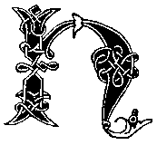
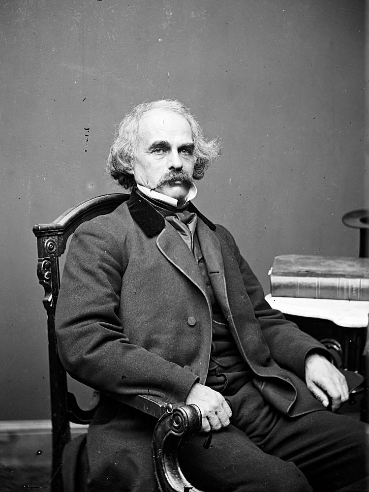

awthorne
Hawthorne was a relation of the famed judge of the Salem witch trials, a fact about which he was terribly embarrassed. He even changed the spelling of his name to distance himself from that part of the family.
.. ... -... -.
